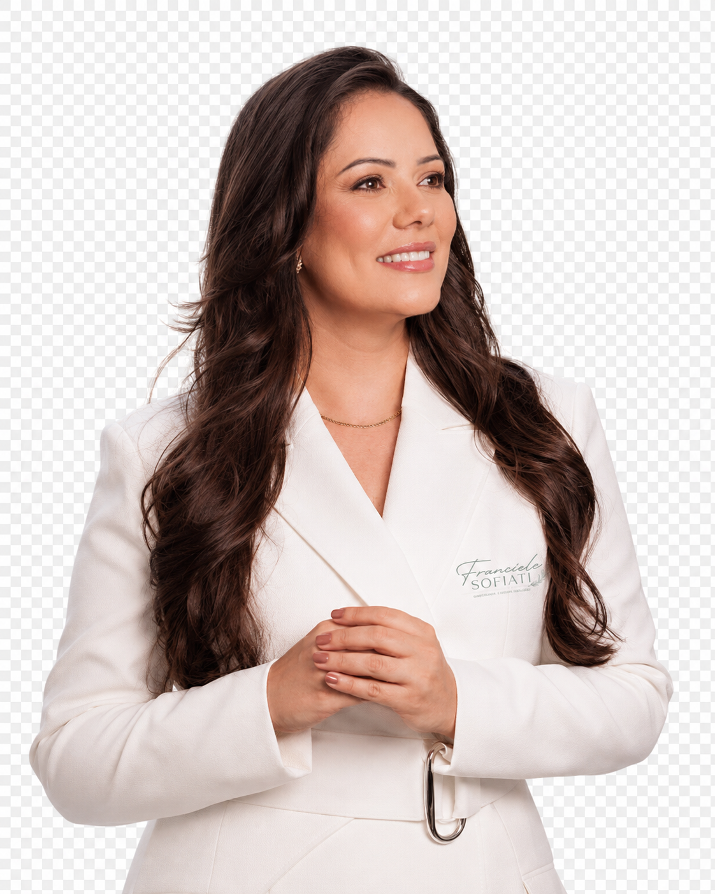

What you can expect
- Time to explain the concern in your own words
- A recommendation with a clear reason
- Respect for your features, preferences and boundaries
- Preparation and aftercare that make sense for the procedure
Mission
MY MISSION
 Franciele Sofiati · Biomedical Aesthetics
Franciele Sofiati · Biomedical Aesthetics
Be heard, understand your options and choose without pressure.
WHY IT MATTERS
I want aesthetic care to leave you feeling more informed and more comfortable in your own decisions. That means making room for what concerns you without turning every natural feature into something that needs treatment.
You deserve an honest conversation about what may help, what may not and what can reasonably be expected.
You deserve care that helps you feel more confident, while still feeling completely like yourself.

THE CHANGE
I first want to understand what you notice, how it affects you and why you are seeking guidance now.
Health history, medication, previous procedures, routine and upcoming commitments can all change what is sensible.
The degree of change you want and the recovery you can manage belong in the decision.
Uncertainty is welcome. Questions help make consent more informed and the plan more useful.
Listening is not a courtesy added to treatment. It is clinical information that can change the recommendation.
MY PROMISE
Understand the concern, the hoped-for change and what would still feel natural to you.
Consider the area, your history, current condition, previous care and possible contraindications.
Describe suitable options, limits, preparation, recovery and alternatives in plain language.
Give you space to proceed, prepare, wait or decline without being rushed.
Use your response to decide whether to continue, adjust, simplify or stop.

Confidence grows when you understand the choice and know that it remains yours.
SCIENCE WITH HUMANITY
Technology, treatment depth and settings need to match the intended target and the person receiving care.
Comfort, privacy, fears and practical limitations deserve the same careful conversation.
I will explain uncertainty and what a procedure cannot do, not only its possible benefits.
If a concern needs medical investigation or another professional’s assessment, that is the responsible next step.
You should never have to choose between feeling cared for and receiving an honest answer.
NATURAL BEAUTY
My aim is not to standardise faces, skin or bodies. I consider proportion, movement and the features that make you recognisable before discussing change.
Treatment planning should leave room for the way you naturally communicate and move.
Another person’s photograph cannot define what will look or feel right for you.
A smaller intervention, a slower plan or no procedure may be the most appropriate answer.
Care should support how you feel, not create a new list of things to fear or correct.
Beauty feels most personal when your character is still present in the result.

CARE THAT CONTINUES
Receive instructions that reflect the specific procedure and your current skin or treatment area.
Disclose relevant health changes, medication, sun exposure and recent procedures before treatment.
Understand expected temporary effects, practical restrictions and home care.
Know which changes should be reported and how to reach Franciele with a concern.
Return for review when the procedure or your response calls for it.
Looking after yourself includes giving recovery the time and attention it deserves.
A CALMER SPACE
A calm clinic experience is not about silence. It is about having enough space to speak, understand and make a considered choice.
Your questions are part of your care, and you deserve answers you can genuinely understand.
THE FUTURE I BELIEVE IN
Active irritation, recent sun exposure, health changes or an unsuitable recovery window may make postponement appropriate.
A simpler routine or a smaller intervention can be more useful than adding procedures.
Medical symptoms, uncertain diagnoses or concerns outside aesthetic scope should be assessed by the appropriate professional.
Progress, tolerance and priorities may lead Franciele to alter intervals, settings or the treatment route.
New technology is valuable when it improves judgment and care, not when it replaces them.
The highest standard is not doing everything possible; it is choosing what is responsible for you.
When you are ready
Feel heard, know your options and choose what feels right for you.